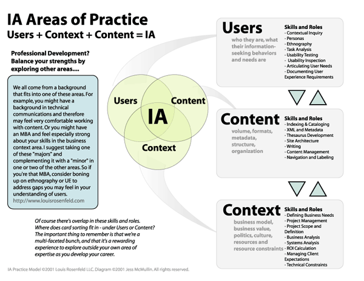

Informationsarkitektur er en konceptuel model, der beskriver det overordnede design for, hvordan siderne på et website er organiseret. Alle websites har en informationsarkitektur, men den er især vigtig for store, komplekse sites. Når du kortlagt, hvilke grundlæggende informationer der skal være på siden, skal du strukturere dem. På de fleste websites anvendes hierarkier til at give overblik over sidens informationer.
En måde at få ideer til hvordan informationen skal struktureres er brugen af brainstorm. Deltagerne kan skrive ned på post -it alle ideer de har i forhold med informationsoverskrifter. Herefter de diskuterer og de flytter sedlerne rund indtil der er fundet kategorier der dækker alle sedler.
Det er 3 måde at design navigationen:
Lineær struktur – det kender den fra trykt materiale såsom bøger,magasiner hvor forbrugerne navigerer lineært gennem indholdet. Indholdet præsenteres på en bestemt rækkefølge. En anden eksemple er online købsprocesser.
Kontekstafhængig struktur – det følger ikke på den hierarkisk orden. Websiderne kommunikere hinanden via links. Det linker til hinanden informationer der er relevant til hiannden. En god eksemple er instagram hvor ved hjælp af hashtags virker som navigationmenu.
Kilder: Interfacedesign – Morten Rold